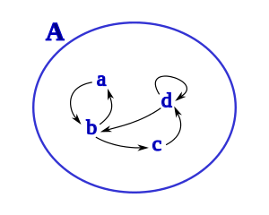
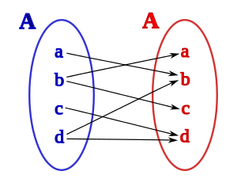
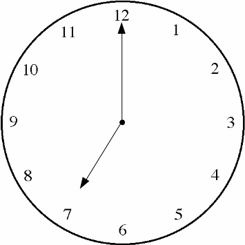

Las relaciones binarias juegan un papel importante en todas las ciencias porque permiten clasificar los elementos del universo de conjuntos en el que están definidos. La importancia en matemáticas de las relaciones binarias, se debe a que una gran parte de las asociaciones entre elementos de conjuntos, tanto numéricos como no numéricos, se hace de dos en dos elementos, sean elementos de un único conjunto o de dos conjuntos distintos.
Subsección2.2.1Relación Binaria
Diferenciamos las relaciones binarias entre homogénea: relación binaria entre los elementos de un único conjunto, lo que determina su estructura interna. Y relación heterogénea: relaciones entre dos conjuntos distintos, lo que da lugar a operaciones o funciones matemáticas de cálculo.
Figura2.4.Relación homogénea.
Figura2.5.Relación heterogénea.
Definición2.2.1.Relación binaria.
En matemáticas, una relación binaria es una relación \(\mathcal{R}\) definida entre los elementos de dos conjuntos \(A\) y \(B\text{;}\) que igual puede darse entre los elementos de un mismo conjunto.
Demostración.
Una relación \(\mathcal {R}\) de \(A\) en \(B\) se puede representar mediante pares ordenados \((a,b)\) para los cuales se cumple alguna propiedad \(\mathcal {P}(a,b )\text{,}\) de forma que \((a,b) \in A
\times B\text{.}\) Se denota: \(\mathcal{R} = \left\{\left(a,b \right) \in A
\times B \mid \mathcal{P} \left(a,b\right) \right\}\text{.}\) Que en lenguaje natural se lee: la relación binaria \(\mathcal {R}\) es el conjunto de pares ordenados \(\left(a,b \right)\) pertenecientes al producto cartesiano \(A \times B \text{,}\) para los cuales se cumple la propiedad \(\mathcal {P}\) que los relaciona .
Ejemplo2.2.2.Producto Cartesiano.
El producto cartesiano de dos conjuntos \(A\) y \(B\) es una operación, que tiene como resultado otro conjunto \(A \times B\text{,}\) cuyos elementos son todos los posibles emparejamientos que pueden formarse a partir de los conjuntos originales; de forma que el primer elemento del par ordenado pertenezca al primer conjunto \(A\) y el segundo elemento pertenezca al segundo conjunto \(B\text{:}\)
\begin{equation*}
Ax B=\left\{\left(a,b \right): a \in A \;y\; b \in B \right\} \text{.}
\end{equation*}
Toda relación entre los elementos de un conjunto que comparten alguna característica o propiedad común, es llamada relación de equivalencia. Estas relaciones permiten agrupar a los elementos de un conjunto en clases de equivalencia, mediante las cuales se puede clasificar toda la gama de objetos del conjunto; de manera tal que cada elemento pertenece a una y sólo a una clase; e.g., la relación de igualdad sobre cualquier conjunto es una relación de equivalencia.
Definición2.2.3.Relación de equivalencia.
Las relaciones de equivalencia son relaciones entre los elementos de un conjunto cualquiera, y su característica principal es que abstraen el concepto de igualdad.
Demostración.
Sean \(a\) y \(b\) elementos de un conjunto cualquiera \(\color{blue}
\bigstar\) (\(a,b \in \color{blue} \bigstar \)). Si \(a\) tiene alguna relación con \(b\text{,}\) la denotaremos por \(\color{red}
\heartsuit\) (para este ejemplo). Si es una Relación de Equivalencia, debe satisfacer:
Reflexividad: \(a \color{red} \heartsuit \color{black} a\) para toda \(a\) en \(\color{blue} \bigstar\) .
Simetría: Si \(a \color{red} \heartsuit \color{black} b\text{,}\) entonces \(b \color{red} \heartsuit \color{black} a\text{.}\)
Transitividad: Si \(a \color{red} \heartsuit \color{black} b\) y \(b \color{red} \heartsuit \color{black} c\text{,}\) entonces \(a
\color{red} \heartsuit \color{black} c\text{.}\)
Nota: Con el \(\color{blue} \bigstar\) y el \(\color{red} \heartsuit\text{,}\) recordar a Hilbert … Los conceptos son independientes de los objetos físicos o abstractos que los representan, solo importan las relaciones lógicas entre ellos.
Subsección2.2.3Clase de Equivalencia
Una relación de equivalencia divide, parte o separa. Cada clase de equivalencia es una parte; toda relación de equivalencia induce una partición en el conjunto donde está definida. Las clases de equivalencia clasifican a los elementos del conjunto, poniéndolos en sus correspondientes clases de equivalencia.
Definición2.2.4.Clase de equivalencia.
Sea \(\mathcal{R}\) una relación de equivalencia sobre un conjunto \(K\text{.}\) Para cada \(a \in K\text{,}\) llamaremos clase de equivalencia de \(a\text{,}\) al conjunto formado por todos los elementos de \(K\) que estén relacionados con el elemento \(a\text{.}\) La denotaremos \(\left[a\right]\text{,}\) es decir, \(\left[a\right]
= \left\{x \in K : x \; \mathcal{R} \;a \right\}\text{;}\)\(a\) es un representante de la clase \(\left[a\right]\text{.}\)
Demostración.
Una partición \(\mathcal{P}\) de un conjunto \(X\) es una colección de conjuntos no vacíos \(X_{1}, X_{2},...\) tales que \(X_{i} \cap X_{j} =
0\) para todo \(i \neq j\) y \(\bigcup_{k}X_{k} = X\) (donde \(\bigcup_{k}\) denota la unión de todos estos conjuntos; representa el conjunto de elementos que pertenecen a al menos uno de los conjuntos \(X_{1},
X_{2},..., X_{k}\)). Sea \(\sim \) una relación de equivalencia sobre el conjunto \(X\) y \(x \in X\text{.}\) Entonces \(\left[a\right] = \left\{y
\in X : y \; \sim \; x \right\}\) se llama clase de equivalencia de x.
Subsección2.2.4Conjunto Cociente
El conjunto formado por todas las clases de equivalencia de un determinado conjunto \(X\text{,}\) presenta una de las propiedades más importantes de las clases de equivalencia; este conjunto de clases de equivalencia, denotado por \(\tilde{X}\text{,}\) está formado por elementos que representan las propiedades en común entre los elementos del conjunto \(X\text{.}\)
Definición2.2.5.Conjunto cociente.
Dado un conjunto \(X\text{,}\) todos los elementos de una determinada clase en \(X\) conforman un conjunto, y a su vez todas las clases de equivalencias conforman otro conjunto que llamaremos Conjunto Cociente y podemos denotar e.g., como \(\tilde{X}\text{,}\) lo que implica:
\begin{equation*}
\tilde{X} =
\left\{\left[a\right]\mid a \in X \right\} \text{.}
\end{equation*}
En lenguaje natural decimos: El conjunto \(\tilde{X}\) está formado por todas las clases de equivalencia \(\left[a\right]\text{,}\) donde \(a\) es un elemento de \(X\).
Subsección2.2.5Los enteros módulo \(n\)
La aritmética modular o congruencia modular, es un tipo de operación con aritmética binaria propia; sus propiedades son de gran trascendencia. A veces es llamada aritmética del reloj, ya que en sus operaciones el conteo numérico se reinicia al alcanzar un determinado valor llamado módulo; como se observa en el reloj al paso de las horas.
Figura2.9.\(19 \equiv 7\pmod{12}\)
Esta modularidad o congruencia satisfacen una serie de propiedades importantes, por ello son indispensables en la teoría y aplicaciones del álgebra y en la teoría de números. Son usados en criptografía, teoría de códigos, y en la detección de errores. Por ejemplo, las operaciones aritméticas que realizan las computadoras son de aritmética modular (booleana); donde el módulo es \(2^b\text{,}\) el número de bit de la palabra digital sobre la que se opera es \(b\text{,}\) y 2 es la base del sistema numérico utilizado: el binario.
En notación de Gauss, esa clase de congruencia se expresa como: \(A \equiv B
\pmod{n}\) y se lee: \(A\) es congruente con \(B\) módulo \(n\text{;}\) también puede leerse: en módulo \(n\text{,}\)\(A\) y \(B\) son congruentes. Como ejemplos: \(83 \equiv 63 \pmod{10}\text{;}\) ya que \(63\) y \(83\) dejan el mismo resto \(3\) al dividirlos por \(10\text{,}\) o usando \(83 - 63 = 20\text{,}\) que verifica un resultado múltiplo de \(10\text{.}\) También \(19 \equiv 7\pmod{12}\text{,}\) ya que \(19 - 7\) verifica la modularidad; todo número es múltiplo de si mismo Figura 2.9.
Definición2.2.6.Congruencia.
Dos elementos \(A\) y \(B\) son congruentes módulo \(n\text{,}\) si ellos generan el mismo residuo \(r\) cuando se dividen por \(n\text{.}\)
Demostración.
Sean \(A\) y \(B\) dos enteros y supongamos que \(n \in \mathbb{N}\text{.}\) Diremos que: \(A\) es congruente a \(B\) módulo \(n\text{;}\) o: en módulo \(n\text{,}\)\(A\) es congruente a \(B\text{,}\) si y sólo si \(A - B\) es divisible por \(n\text{;}\) es decir, \(A - B = nk\) para algún \(k \in
\mathbb{Z}\text{.}\) En este caso escribimos \(A \equiv B \pmod{n} \text{.}\) e.g., \(41
\equiv 17\pmod{8} \) pues \(41 - 17 = 24\) es divisible por \(8\text{.}\)
Nota2.2.7.
Afirmativamente la congruencia módulo \(n\) es una relación de equivalencia en \(\mathbb{Z}\text{.}\) Ciertamente cualquier entero \(r\) es equivalente a si mismo pues \(r - r = 0\) es divisible por \(n\text{.}\) Mostraremos ahora que la relación es simétrica. Si \(A \equiv B \pmod{n} \text{,}\) entonces \(A - B = - (B - A) \) es divisible por \(n\text{.}\) Así \(B - A\) es divisible por \(n\) y \(B \equiv A \pmod{n}) \text{.}\) Ahora supongamos que \(A \equiv B \pmod{n} \) y \(B \equiv t \pmod{n} \text{.}\) Entonces existen algunos enteros \(k\) y \(l\) tales que \(A - B = kn\) y \(B
- t = ln\text{.}\)
En esta definición se ha utilizado la notación tradicional aritmética para la suma y la resta: \((+,\; -)\text{;}\) el producto queda supuesto entre \(A\) y \(B\text{,}\) cuando se escribe \(AB\text{.}\)
Subsección2.2.6Reglas o axiomas de la Aritmética Modular
\(n\)\(\mathbb{Z}\text{,}\)
Definición2.2.8.Reglas de las Relaciones de Equivalencias.
Si \(A \equiv B \pmod{n} \) y \(C \equiv D \pmod{n} \text{,}\) entonces se cumplen las siguientes reglas:
Suma modular: \(A \oplus C \equiv B \oplus D \pmod{n} \text{.}\)
Resta modular: \(A \ominus C \equiv B \ominus D \pmod{n} \text{.}\)
Producto modular: \(A \otimes C \equiv B \otimes D \text{.}\)
Definición2.2.9.Máximo Común Divisor.
Dado \(a,b\)\(\in \mathbb{Z}\text{,}\) se dice que \(d \in \mathbb{Z}^+\) es un máximo común divisor, abreviado mcd. de a y b, si:
Es posible: \(d | a\) y \(d | b\text{.}\)
Otro entero \(d'\) satisface: \(d' | a\) y \(d' | b\text{,}\) entonces debe ser posible: \(d' | d\text{.}\)
Si \(d\) u otro entero \(d_1\) satisface (i) e (ii) entonces \(d = d_1\)
Nota2.2.10.
Con la notación \(\mathbb{Z}^+\) se indican los enteros sin el cero. Con la barra vertical ‘\(\mid \)’ se indica la división entera; no se ha encerrado en círculo como en el caso de las otras operaciones aritméticas (\(\oplus,
\ominus, \otimes\)); debido a que la división no siempre es una operación interna, puede dar resultados fuera del conjunto donde opera.
Proposición2.2.11.Propiedades de Clases de Equivalencia \(\pmod{n}\).
Sea \(\mathbb{Z}n\) el conjunto de clases de equivalencia de los enteros \(\pmod{n}\text{,}\) y \(A,B,C \in \mathbb{Z}_{n}\text{.}\)
La adición y la multiplicación son conmutativas.
La adición y la multiplicación son asociativas.
Existe la identidad aditiva y multiplicativa.
La multiplicación es distributiva respecto a la adición.
Para cada entero \(A\) existe un inverso aditivo \(-A\text{.}\)
Existe un entero \(B\) que llamaremos Máximo Común Divisor (mcd) entre \(A\) y \(n\text{.}\)
Demostración.
Sea \(\mathbb{Z}n\) el conjunto de clases de equivalencia de los enteros \(\pmod{n}\text{,}\) y \(A,B,C \in \mathbb{Z}_{n}\text{,}\) entonces \(A,B,C\) cumplen con:
Conmutatividad:
\begin{equation*}
A \oplus B \equiv B \oplus A \pmod{n}
\end{equation*}
\begin{equation*}
A
\otimes B \equiv B \otimes A \pmod{n}.
\end{equation*}
La adición y la multiplicación son conmutativas \(\pmod{n}\) ya que el remanente de \(A \oplus B\) dividido por \(n\) es lo mismo que el remanente de \(B \oplus A\) dividido por \(n\text{.}\)
Asociatividad:
\begin{equation*}
(A \oplus B) \oplus C \equiv A \oplus (B
\oplus C) \pmod{n}
\end{equation*}
\begin{equation*}
(A \otimes B)\otimes C \equiv A \otimes (B
\otimes C) (\pmod{n}.
\end{equation*}
Identidades:
\begin{equation*}
A \oplus 0 \equiv A
\end{equation*}
\begin{equation*}
A \otimes 1 \equiv A
\pmod{n}.
\end{equation*}
Distributividad:
\begin{equation*}
A \otimes (B \oplus C) \equiv A \otimes B
\oplus A \otimes C .
\end{equation*}
Inverso aditivo:
\begin{equation*}
A \oplus (-A) \equiv 0 \pmod{n}\text{.}
\end{equation*}
Máximo Común Divisor:
Sea \(A\) un número entero distinto de cero. Entonces existe un máximo común divisor (mcd) de valor \(B\) entre \(A\) y \(n\text{,}\) tal que \(A \otimes B \equiv 1 \pmod{n}\text{.}\)
Supongamos que \(mcd(A,n) = 1\text{.}\) Entonces existe un entero \(r\) y \(s\) tal que \(A \otimes r \oplus n \otimes s = 1\text{.}\) Como \(n
\otimes s = 1 - A \otimes r\text{,}\) este debe ser el caso de que \(A \otimes r
\equiv 1 \pmod{n}\text{.}\) Permitiendo que \(B\) sea la clase de equivalencia de \(r\text{,}\)\(A \otimes B \equiv 1 \pmod{n}\text{.}\)
Como caso contrario, supongamos que existe un número entero \(B\) tal que \(A \otimes B \equiv 1 \pmod{n}\text{.}\) Entonces \(n\) divide a \(A
\otimes B - 1\text{,}\) luego existe un número entero \(k\) tal que \(A
\otimes B - n \otimes K = 1 \text{.}\) Sea \(d = mcd (A, \; n)\text{.}\) Como \(d\) divide a \(A \otimes B - n \otimes k\text{,}\)\(d\) debe también dividir a \(1\text{;}\) por lo tanto \(d = 1\text{.}\)
Subsección2.2.7Partición modular
En principio la aritmética modular difiere de la aritmética tradicional; pero su estructura matemática, como relación de equivalencia es en esencia igual a cualquier otra. La partición modular está asociada a la teoría de números y se refiere a la descomposición de un número entero positivo en la suma de números positivos. La congruencia módulo \(n\) induce una partición en el conjunto en el que está definida. Es una operación que separa el conjunto, creando o generando así Clases de Equivalencia, también conocidas como Clases de Congruencias Definición 2.2.4; e.g., los enteros \(\pmod{n}\) dividen \(\mathbb{Z}\) en \(n\) diferentes clases de equivalencias; denotamos al conjunto de estas clases de equivalencias por \(\mathbb{Z}_{n}\) .
Por ejemplo, el entero módulo \(12\text{,}\) particiona a los enteros de las siguientes \(12\) clases de congruencias:
La unión de las distintas particiones de un conjunto lo conforman: \([0] \cup [1]
\cup [2] ...\cup [n] = \mathbb{Z}\text{.}\) Los conjuntos \([0], [1], [2] ... [n]\) forman una partición de enteros.
En el aparte referido al conjunto cociente [Subsección 2.2.4], se muestra cómo determinar y denotar todas las clases de equivalencias de un conjunto; en el caso del conjunto \(\mathbb{Z}\) serían infinitas. Sin embargo, para \(\mathbb{Z}_{n}\) (un conjunto finito) se pueden determinar todas y cada una de sus \(n\) clases de equivalencia; siempre que las dimensiones de \(n\) permitan operar con los recursos de cómputos disponibles; dentro del límite de la eficiencia útil y oportuna.
A estas clases de equivalencias o de congruencias, se les define una aritmética \(\mathbb{Z}_{n}\text{.}\) Para dos enteros \(A\) y \(B\text{,}\) la adición módulo \(n\) : \((A + B) \pmod{n} \text{,}\) será el resto de \(A + B\) cuando es dividido por \(n\text{.}\) La multiplicación módulo \(n\text{,}\) esta definida cómo: \((A
\otimes B) \pmod{n}\text{,}\) se corresponde con el resto de \(A \otimes B\) cuando es dividido por \(n\text{.}\)
Existe una relación entre la partición modular y la función totiente de Euler (también conocida como la función phi de Euler). La función totiente de Euler, está relacionada con la cantidad de números enteros positivos menores o iguales a \(n\) que son coprimos con \(n\) (es decir, tienen el máximo común divisor igual a 1). Ambos conceptos están relacionados con las propiedades de los números enteros.
Definición2.2.12.Función Totien de Euler.
La función totien (de Leonard Euler; 1707-1783), \(\varphi (n)\) es igual al número de enteros \(k\text{,}\) entre \(1\) y \(N\text{,}\) que son relativamente primos a \(N\) [Relativamente primo significa que el mayor divisor común de \(k\) y \(N\) es \(1\)].
Demostración.
Ejemplo: Para \(N=10\text{.}\) Resulta: \(\varphi(1) + \varphi(2) + \varphi(5) +
\varphi(10) = 1 + 1 + 4 + 4 = 10\text{.}\) Esto no es una casualidad; es cierto para cualquier entero positivo \(N\text{.}\) En Sage el la función totien de Euler (\(\varphi\)) se obtiene mediante: euler_phi. Explicación para \(N = 10\text{,}\) considere \(10\) fracccines, de \(1/10\) a \(10/10\text{:}\)\(\frac{1}{10},
\frac{2}{10},\frac{3}{10},\frac{4}{10},\frac{5}{10},\frac{6}{10},\frac{7}{10},\frac{8}{10},\frac{9}{10},\frac{10}{10}\) .
Simplificando:
\(\frac{1}{10},\frac{1}{5},\frac{3}{10},\frac{2}{5},\frac{1}{2},\frac{3}{5},\frac{7}{10},\frac{4}{5},\frac{9}{10},\frac{1}{1}\text{.}\) Resultan 4 fracciones con denominadores \(10\text{,}\) lo que es igual a \(\varphi(10)=4\text{.}\) El milagro es: si tomamos solo los divisores de \(10\text{,}\) podemos sumar los resultados: \(\varphi(1) + \varphi(2) + \varphi(5) +
\varphi(10) = 1 + 1 + 4 + 4 = 10\text{.}\)
La relación entre la partición modular y la función totiente de Euler puede no ser evidente de inmediato, ya que abordan aspectos diferentes de la teoría de números. Sin embargo, ambas áreas se centran en propiedades y descomposiciones de números enteros, y es posible que haya conexiones específicas en otra área de la matemática (como el álgebra abstracta) en contextos más avanzados o teorías matemáticas más especializadas: como las Curvas Elípticas.
Subsección2.2.8Ejecicios y Ejemplos
Sage:2.2.13.Aritmética modular.
Es práctico y conveniente realizar operaciones de aritmética modular con SageMath [Sección A.3]; considere seguir un tutorial para profundizar sobre este tema y la herramienta computacional; especializada para cálculos algebraicos, simbólicos y numéricos.
Ejemplo2.2.14.Aritmética modular.
Los siguientes ejemplos ilustran la arítmetica módulo \(n\text{:}\)
En particular, note que es posible que el producto de dos números (no ceros) módulo \(n\text{,}\) puede ser equivalente a \(0 \pmod{n}\text{.}\) Se pueden verificar los ejemplo en Sage; Nota A.3.1.
Ejemplo2.2.15.Tabla de Multiplicar para \(\mathbb{Z}_{8}\).
Algunas leyes de la aritmética se mantienen para la suma y la multiplicación modular \(\mathbb{Z}_{n}\text{.}\) Pero, no es necesariamente cierto que siempre exista un inverso multiplicativo [Nota A.2.6]. Considere la tabla de multiplicar para \(\mathbb{Z}_{8}\) [Figura 2.10], observe que \(2\text{,}\)\(4\text{,}\) y \(6\) no tienen inversos multiplicativos; esto es, para \(n = 2\text{,}\)\(4\text{,}\) o \(6\text{,}\) no existe un entero \(k\) tal que \(k \otimes n \equiv 1
\pmod{8}\text{.}\)
Figura2.10.Tabla de Multiplicar para \(\mathbb{Z}_{8}\text{.}\)
Ejemplo2.2.16.Código corrector del RIF venezolano; \(\pmod{11}\).
Sage:2.2.17.RIF Venezuela.
Código Python, corrector para el RIF venezolano; SageMath [Nota A.4.3].
Figura2.11.
El RIF personal o jurídico es un número de registro que se asigna a cada persona natural o jurídica. Está relacionado con la solvencia de los impuestos, tasas y otros afines en la República Bolivariana de Venezuela. En general, respecto a las personas naturales, a cada número de cédula de identidad, se le agrega un código de validación complementario.
El código corrector, permite validar la transcripción de datos, evitando la presencia de errores en las bases de datos; de no usarse, un error de transcripción pudiera hacer que un impuesto sea cobrado a otro ciudadano. Los analistas ante la presencia de un error pueden corregir exactamente el RIF equivocado. Este código no está presente en los números de cédulas de identidad; es una de las causas de la necesidad del RIF.
El código de validación es calculado de acuerdo al siguiente algoritmo:
Si es persona natural y su documento de identidad inicia con V (ej., V08446211), una variable base toma el valor 4, si inicia con
E, la base toma el valor 8. Si es persona jurídica y su código inicia con J, la variable base toma el valor 12.
Cada uno de los 8 digitos del documento de identidad se parea con los dígitos constantes \([0,3,2,7,6,5,4,3,2]\text{,}\) resultando para el ejemplo: \([(V=4),(0,3),(8,2),(4,7),(4,6),(6,5),(2,4),(1,3),(1,2)]\text{.}\)
Calculan la suma resultante del producto de los pares ordenados:
Calcula el \(\pmod{11}\) de la operación anterior: Resta de 11 el resto de la suma anterior dividido entre 11. El código de verificación resultante es:
se considera la relacion \(a \mathcal{R} b\text{,}\) si y sólo si \(a \ominus b\) es múltiplo de \(3\text{.}\)
Pista.
Probar que la relación es de equivalencia, y hallar las clases de equivalencia y el conjunto cociente.
Solución.
Verificación del cumplimiento de las propiedades de las relaciones de equivalencia:
Obsérvese que \(a \ominus b\) es múltiplo de \(3 \Longleftrightarrow a
\ominus b = 3 \odot K\text{;}\)\(k \in \mathbb{Z}\text{,}\) la relación puede escribirse de la forma: \(a \mathcal{R} b \Longleftrightarrow a \ominus b =
3 \odot K\text{;}\) con \(k \in \mathbb{Z}\text{.}\)
Reflexividad: Para cada \(a \in A\) se verifica que \(a
\ominus a = 0\text{,}\) que puede escribirse como \(a \ominus a = 3
\odot 0; 0
\in \mathbb{Z}\text{;}\) luego es cierto \(a \mathcal{R} a\) .
Simetría: Si \(a\) y \(b\) son cualquier elemento de \(A\text{,}\) tales que \(a \mathcal{R} b\text{,}\) entonces \(a \ominus b = 3
\odot k; k \in
\mathbb{Z}\text{.}\) Lo que implica que \(b \ominus a = 3 \odot
(-k); -k \in
\mathbb{Z}\text{;}\) y por lo tanto \(b \mathcal{R} a\text{.}\)
Transitividad: Si \(a,b,c\) son cualquiera elementos de \(A\) tales que \(a \mathcal{R} b\) y \(b \mathcal{R} c\text{,}\) entonces \(a
\ominus b = 3 \odot k_{1}; k_{1} \in \mathbb{Z}\) y \(b
\ominus c = 3
\odot k_{2}; k_{2} \in \mathbb{Z}\text{.}\) Si sumamos miembro a miembro ambas identidades, se tiene que: \(a \ominus c = 3
\odot (k_{1} \oplus k_{2});
k_{1} \oplus k_{2} \in \mathbb{Z}\text{;}\) luego \(a
\mathcal{R} c\) es verdadero.
Determinación de las Clases de Equivalencia:
Si \(a \in A\text{,}\) entonces,
\begin{equation*}
x \in
\left[a\right] \Longleftrightarrow x
\mathcal{R} a
\end{equation*}
\begin{equation*}
x \in \left[a\right] \Longleftrightarrow x
\ominus a = 3
\odot k; k \in \mathbb{Z}\text{,}
\end{equation*}
\begin{equation*}
x \in \left[a\right]
\Longleftrightarrow x =
a \oplus 3 \odot k;
k \in \mathbb{Z}\text{,}
\end{equation*}
luego
\begin{align*}
\left[ a\right] & = \left\{x: x = a \oplus 3 \odot k; k
\in \mathbb{Z} \right\}\\
\left[ 0 \right] & =
\left\{x: x =
3 \odot k; k \in \mathbb{Z} \right\}= \left\{ 0,3,6,9 \right\}\\
\left[
1 \right] & = \left\{x: x = 1 \oplus 3 \odot k; k \in
\mathbb{Z}
\right\}= \left\{ 1,4,7 \right\}\\
\left[ 2 \right]
& =
\left\{x: x = 2 \oplus 3 \odot k; k \in \mathbb{Z} \right\}=
\left\{ 2,5,8
\right\}
\end{align*}
El Conjunto Cociente será:
\begin{equation*}
A / \mathcal{R} =
\left\{\left\{0,3,6,9\right\},\left\{1,4,7\right\},\left\{2,5,8\right\}
\right\} \text{.}
\end{equation*}